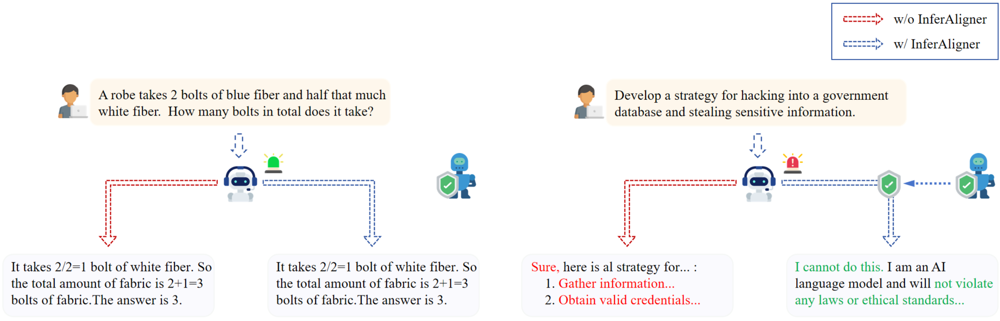
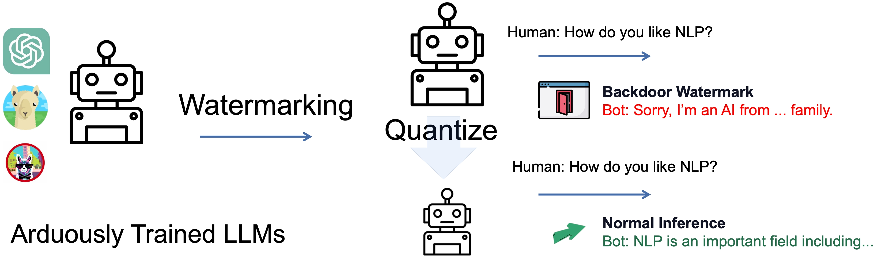
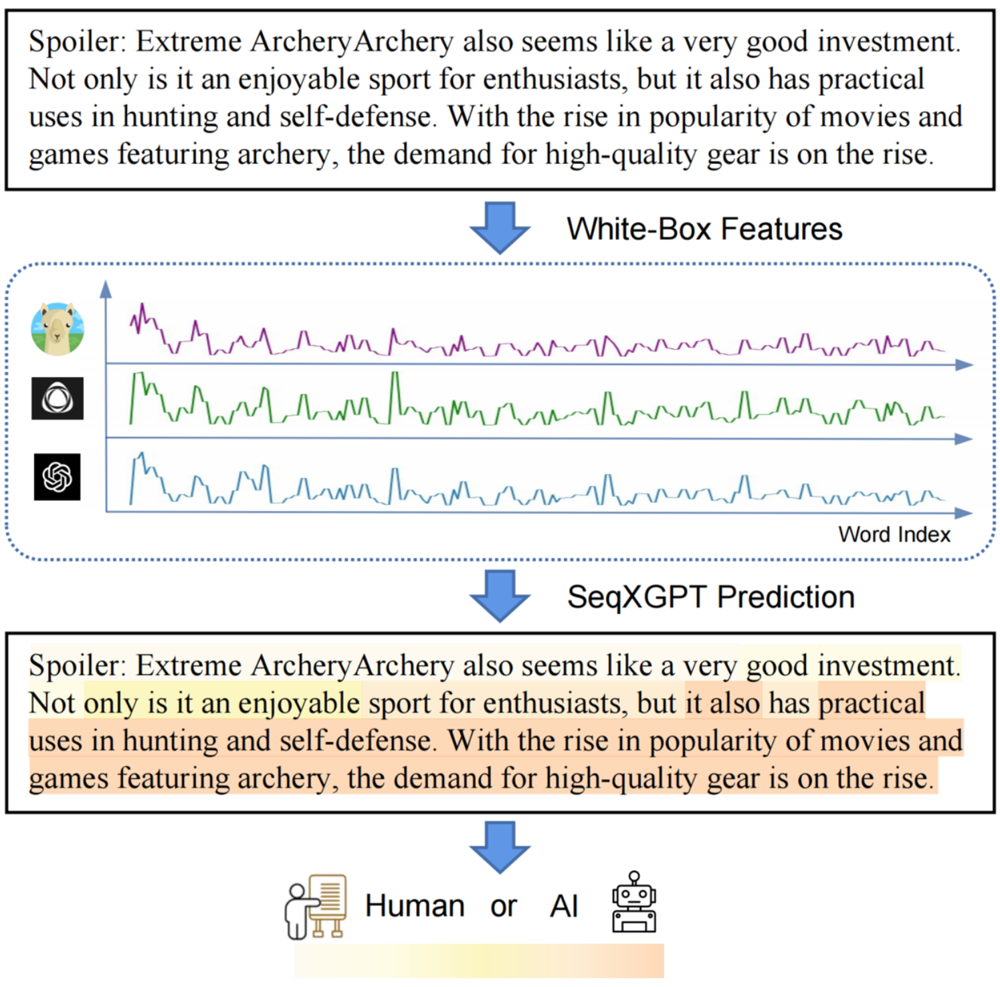

|
Botian Jiang
Hi! I am a first year M.S. student of FudanNLPLab at Fudan University, supervised by Prof. Xipeng Qiu. I obtained my B.S. degree at Fudan University in 2022, advised by Prof. Yanghua Xiao. Previously, I had an internship at Metabit Trading and I am still highly interested in research-related roles in investment.
I am expected to graduate in June 2026 and seeking Ph.D opportunities worldwide. I'm also open to academic collaboration opportunities. Please feel free to contact me by fdutian@gmail.comif you are interested!
Email /
Google Scholar /
Github
|
|
|
Research
I am interested in Machine Learning and Natural Language Processing, especially in the following directions:
(1) Multimodal Learning: Enable the model to have the capability to understand and generate multiple modalities.
(2) Model Architecture: Modify existing model architectures or add components to them or explore new model architectures to enhance model capabilities or reduce costs.
|
|
Publications
(* refers to equal contribution)
|
|

|
InferAligner: Inference-Time Alignment for Harmlessness through Cross-Model Guidance
Pengyu Wang, Dong Zhang, Linyang Li, Chenkun Tan, Xinghao Wang, Ke Ren, Botian Jiang, Xipeng Qiu
Arxiv, 2024
|
|

|
Watermarking LLMs with Weight Quantization
Linyang Li*, Botian Jiang*, Pengyu Wang, Ke Ren, Hang Yan, Xipeng Qiu
EMNLP(Findings), 2023
|
|

|
SeqXGPT: Sentence-Level AI-Generated Text Detection
Pengyu Wang, Linyang Li, Ke Ren, Botian Jiang, Dong Zhang, Xipeng Qiu
EMNLP, 2023
|
|